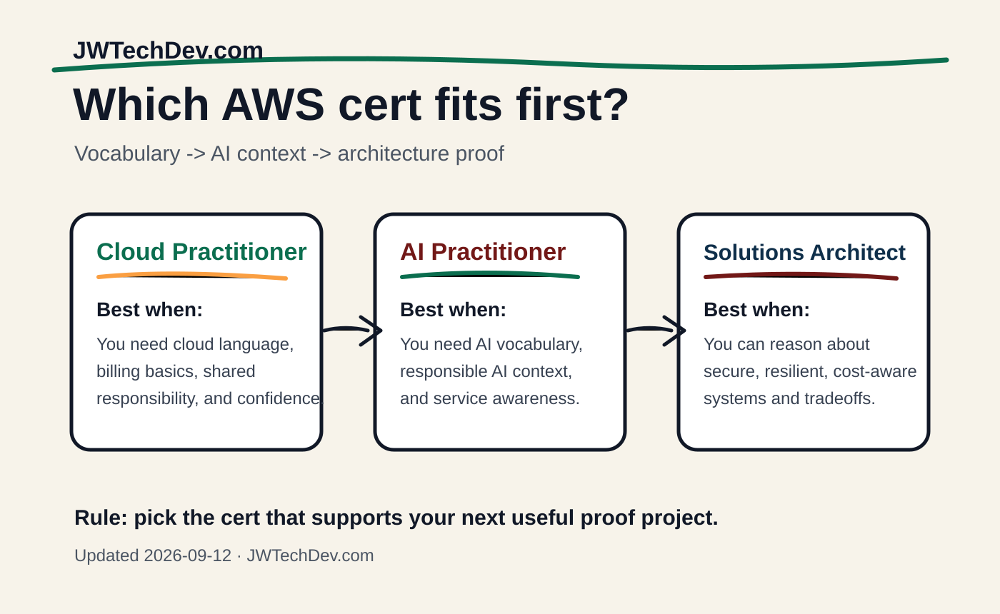

Cloud Practitioner vs AI Practitioner vs Solutions Architect
These three AWS certifications answer different beginner questions. One gives vocabulary, one gives AI context, and one proves you can reason about architecture.

Quick answer
If you are new to cloud, start with Cloud Practitioner. If you are trying to understand AI conversations, add AI Practitioner. If you want the strongest technical signal, build toward Solutions Architect Associate after you understand the basics.
Side by side
Cloud Practitioner
Best for cloud vocabulary, shared responsibility, billing, support, and knowing what AWS services are for.
AI Practitioner
Best for AI literacy, generative AI context, responsible AI framing, and understanding where AI services fit.
Solutions Architect Associate
Best for architecture proof: designing secure, resilient, high-performing, and cost-aware systems.
Not sure which one fits?
Grab the free AWS beginner certification map and match the exam to your background.
Get the free mapThe common mistake
The mistake is treating certifications like a stack of trophies. They are better as a learning route. The question is not "which badge sounds best?" The question is "which certification helps me explain and build the next useful thing?"
A practical beginner path
Start with cloud vocabulary, then build one small thing, then add AI context, then move toward architecture. That sequence keeps you from becoming someone who can name services but cannot explain how systems behave.
A clean path looks like this: Cloud Practitioner concepts, one portfolio project, AI Practitioner context if AI is part of your lane, then Solutions Architect Associate when you are ready to design tradeoffs.
Sources checked
Get the free starter kit
Use the AWS cert map, portfolio checklist, and AI 101 notes to pick a path you can actually finish.
Send me the kit